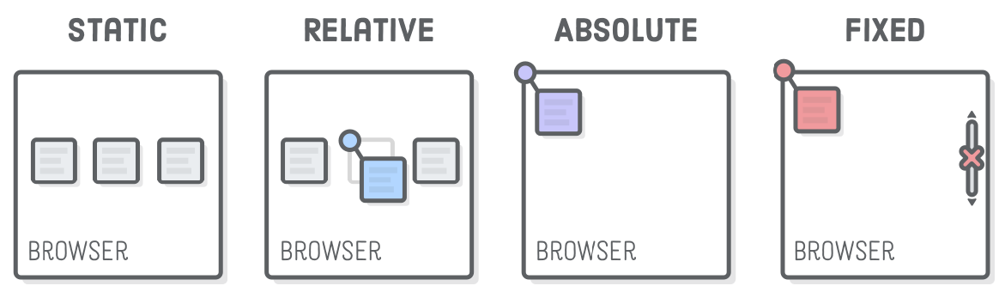

Tipos de Posicionamiento en CSS
Cuando vamos a diseñar páginas web tanto en HTML como en CSS, para poder maquetar
nuestros elementos, debemos de tener en cuenta una serie de propiedades
que nos permitan colocar dichos elementos según nuestras características
solicitadas.
Para ello, debemos utiliar por lo tanto, una propiedad en CSS que se llama
position.
Position consiste en una propiedad que nos va a permitir establecer
la posisición deun elemento de nuestra web, y esto consiste exactamente en cómo
vamos a posicionar un elemento HTML con respecto a su elemento padre y respecto
al flujo normal del documento.
Entre las propiedades que podemos usar con position, tenemos las siguientes:
- Static: Es un tipo de posicionamiento denominado también como normal o estático.
Es decir, posicionamiento por defecto. Como se ha dicho, es un posicionamiento por defecto,
con el que los navegadores acomodan los elementos según el flujo del mismo.
- Relative: Es tipo de posicionamiento denominado como Relativo. Nos permite
posicionar una caja (div) y después moverla desde su lugar original (dejando su lugar vacio)
- Absolute: Es un tipo de posicionamiento denominado como absolute, y esta propiedad, lo
que nos permite es posicionar una caja respecto a su contenedor y respecto al resto de elementos que
ignoran la nueva posición.
- Fixed: También conocida como fija. Nos permite posicionar una caja en donde su posición,
respecto a la pantalla del usuario siempre va a ser la misma.
- Sticky: Se considera un tipo de posicionamiento híbrido entre el posicionamiento Relativo
y el fijo. Es decir, un elemento con composicionamiento Sticky es tratado como un elemento con
posición relativo hasta que cruza un umbral especificado, como puede ser un límite de su padre.
